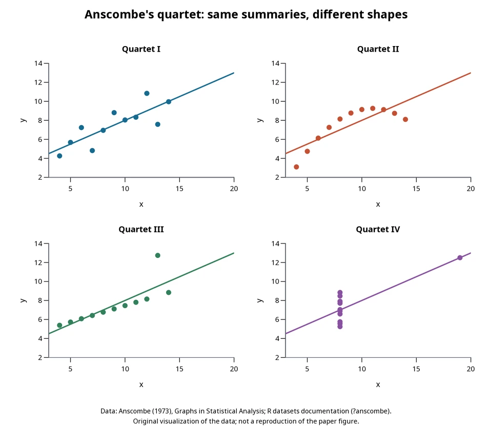

AGENT
Describe the task in plain language
Configure and verify your own model API key, then use Rcoder Agent to help write and run R code. Review the script and the results yourself.
See the Agent exampleAI AGENT FOR DATA ANALYSIS
Tell Rcoder Agent what you want to analyze. Get charts and an analysis report, with R code you can inspect and edit.
No API key for manual R. Agent requires a configured and verified model API key.
From request to results
Follow the example using Anscombe’s quartet: describe the task to Rcoder Agent, review the R code, then download the chart and summary table.
PROMPT
Ask for built-in data, four scatter plots on matching axes, and both a chart and a summary table.
Use R’s built-in anscombe data to plot four groups on matching axes. Save the chart and a summary table.
Ask for built-in data, four scatter plots on matching axes, and both a chart and a summary table.
R · scripts/explore.R
data(anscombe)
lm(y1 ~ x1, data = anscombe)
plot(anscombe$x1, anscombe$y1)This excerpt illustrates the workflow; it is not the full script or a live run.
Open scripts/explore.R to review the inputs, plotting logic, and output paths. Edit it directly if needed.
VERIFY · PNG + CSV
Read the Agent's run output, then open the PNG to check the axes, panels, and data source.

Files from this example
scripts/explore.Routput/anscombe_quartet.pngoutput/anscombe_summary.csvDownload individual files in the workspace or export a project ZIP. Open the downloads to make sure they contain what you expect.
PUBLIC DATA EXAMPLE · ANSCOMBE
All four groups have a correlation of about 0.82, yet the scatter plots look very different. The example keeps code, chart, and summary table separate so each can be opened, compared, and reused.
A new visualization of R’s built-in Anscombe data, not a reproduction of the paper figure.
Download sample chartStart your way
AGENT
Configure and verify your own model API key, then use Rcoder Agent to help write and run R code. Review the script and the results yourself.
See the Agent exampleR CONSOLE
Open a project and wait for R to be ready. In the Console, run 1 + 1. Manual R does not require a model API key.
QUICK DEMO
Try a sample task and see its chart and code. No setup or API key required.
Try the demoBefore you start
What to know about setup, data, and exports.
No. You can write and run R code and view plots without one. To use Rcoder Agent, configure and verify a model API key. Charges and limits depend on the provider you choose.
Yes. They are regular R files in your project. Read, edit, and rerun them in the workspace. Open the output files to check the results rather than relying on Agent's reply alone.
Projects are stored in site storage in your current browser. Before changing browser, device, or workspace domain, export and inspect a project ZIP, then test importing it in the new environment. The ZIP backs up project files, not the full workspace state.
Projects are stored in your browser by default. Agent sends requests to the model provider you configure. Prompts, attachments, and project context included in a request may be sent to that provider. Check its policies and your project requirements before using sensitive data.
Connect DeepSeek, OpenAI, Gemini, or another supported AI service, or configure a compatible endpoint. Access and pricing depend on the provider.
RCODER